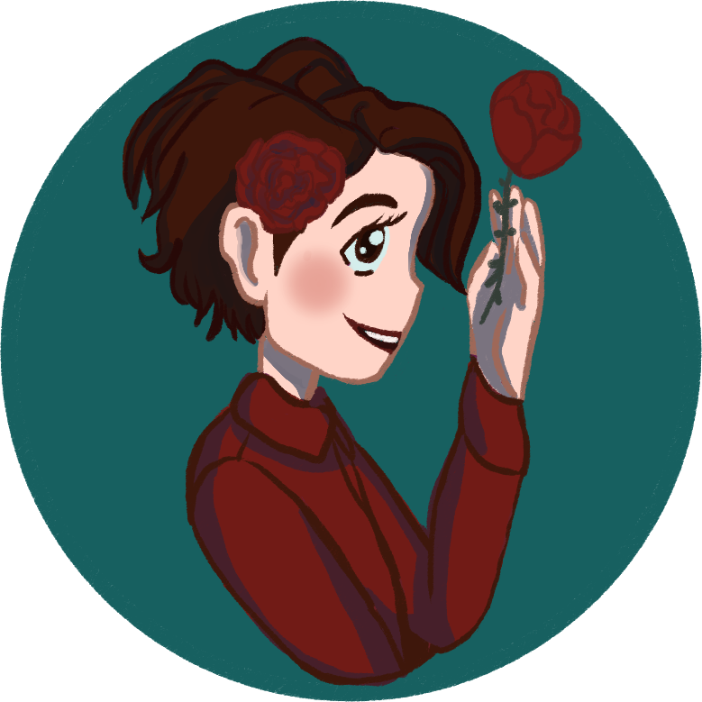

21/02/2022
SinGala
Auteurs indépendantsRegretter la Lumière ?
En ce monde, certaines choses nous paraissent d’une simplicité enfantine… jusqu’à ce que l’on découvre les réalités de la Lumière. Dès lors, il nous est possible de se sentir encore plus perdu, parfois même encore plus mal qu’avant. Il nous est même parfois possible de souhaiter n’avoir jamais pris conscience de toutes ces informations, de toutes ces vérités.
Lorsque j’écoute, lis ou discute avec d’autres personnes par rapport à quoi que ce soit relié à la Lumière, relié à l’Univers, tout le monde semble ne parler que de leur bonheur retrouvé, de leurs vies allant dans la bonne direction, de leur santé améliorée, ou même juste de leur esprit ayant finalement retrouvé le calme. Ils ont compris le sens de leur vie, et cela les rend heureux. Ils parviennent à lâcher prise sur le reste et s’immergent entièrement dans cette vie à suivre les enseignements de la Lumière.
Encore aujourd’hui, je rêve d’un jour pouvoir atteindre cet état dans lequel ces gens évoluent. Leurs vies ne sont pas parfaites, et eux aussi ont parfois des difficultés, mais de ce que je perçois, leurs difficultés n’ont pratiquement jamais de lien avec les enseignements qu’ils ont reçus. Pour ma part, les choses ne me semblent pas aussi simple.
Comme dit plus haut, je suis l’une de ces personnes qui, encore aujourd’hui, a tendance à souhaiter de n’avoir jamais pris conscience de toutes ces vérités. Pourquoi ? Deux réponses peuvent ici être données, la première, par mon mental qui a l’impression de devenir fou, la seconde, par ma conscience, qui sait que tout cela est juste une étape, une épreuve que je dois parvenir à surmonter… un lâcher-prise qu’il me faut apprendre, un sérieux et une morale qu’il me faut rendre plus flexible.
Plus facile à dire qu’à faire bien évidemment, ou non, selon à qui l’on demande.
Bien que je ne regrette pas réellement les enseignements que je reçois à l’heure actuelle, ces pensées de regret restent présents, et, je ne pense pas être la seule à rencontrer cette situation durant mon évolution… Raison pour laquelle j’ai décidé de partager avec vous ce court texte aujourd’hui.
Je n’irais pas forcément en profondeur dans les détails de tout cela – ils seront différents pour chacun, mais je souhaite tout de même expliciter légèrement plus cette sensation qui donne cette impression de folie à mon mental.
De nature stressée et anxieuse, j’ai, pour la majorité de ce dont je me souviens de ma vie, vécu dans un sérieux important, m’interdisant énormément de choses par peur, tout en en acceptant d’autres pour la même raison. Une grande majorité de ma vie a été vécue sans que je ne sois réellement moi-même… au point où la majorité de ma mémoire ne m’est actuellement pas accessible : je ne vivais pas ma vie, je la subissais et tentais de faire de mon mieux pour rester dans une sécurité relative. Au jour d’aujourd’hui, les choses ont changées, d’une petite fille apeurée à l’idée d’être abandonnée, je suis devenue une jeune femme acceptant (presque) totalement qui elle est.
Pour autant, des restes de ces années passées sont encore présents en moi, non plus en tant que peurs réellement, mais plutôt comme des pensées, des phrases, des mots, qui tournent et tentent de retrouver sens dans cette nouvelle vie que je me crée. Mes valeurs, ma moralité, toutes les vérités que je m’étais créées, que l’ont m’avait inculquées au fil des années, tout est encore en moi.
Je sais que cela fait certainement parti de mon travail d’évolution, que je me dois d’accepter ceci et travailler, tel qu’il me semblera être le mieux, pour petit à petit faire le tri dans toutes ces pensées… Et c’est bien cela qui nous fait revenir au sujet de départ…
Que je décide ou non de travailler sur ces pensées, sur ces valeurs de la moi passée, elles tournent dans mon esprit que j’ai encore du mal à rendre silencieux, et se confrontent aux nouvelles valeurs qui tentent de faire leur chemin en moi et trouver leur place. Parfois même, plusieurs nouvelles valeurs s’opposent l’une à l’autre, en plus de s’opposer à une ancienne… Rendant la situation d’autant plus compliqué.
Parfois, elles sont simples, telles que par exemple la confrontation entre « Être qui je suis sans me sentir coupable » et « Être qui les autres veulent pour ne pas déranger »… Parfois elles sont plus complexes, tel que quand je tente de prendre une décision sur ce que devrait être ma réaction face à telle ou telle personne, face à telle ou telle situation qui me déplaît mais que je comprend et accepte tout de même.
Une opposition importante se créé en moi-même, et, dans ces moments, mon mental est certain que je deviens folle à lier… Au point où je rêve d’être enfermée à l’asile !
Pour être honnête, je ne sais toujours pas exactement comment gérer la situation, et le tâtonnement est pour l’instant mon meilleur ami. Cette situation interne n’est pas évidente à vivre, et plus d’une fois cela entraîne en moi des réactions émotionnelles involontaires, ou bien m’épuise au point de dormir pendant plus de 24h d’affilé. J’imagine qu’il n’y a pas de solution magique, que oui, cela fait parti de mon travail d’évolution, mais cela ne veut pas dire que cela est toujours évident, et que je ne regrette pas parfois d’avoir grandi et pris conscience de tant de nouvelles choses, en grande partie grâce aux enseignements de Lumière que j’ai reçu et que je reçois encore.
Cependant, bien qu’une part de moi puisse parfois regretter ce chemin sur lequel je suis rentrée, je sais que si l’on me présentait le choix entre oublier et revenir à celle que j’étais à l’époque, ou continuer à avancer malgré cette sensation de folie, je continuerais à avancer.
Mon évolution, et j’imagine que celle de beaucoup d’autres, n’est pas linéaire, elle n’est pas non plus toujours évidente, et nous avons tous nos propres difficultés et épreuves à surmonter. Pour autant, je suis heureuse d’avoir choisi cette voie.
Si j’écris ceci aujourd’hui, c’est à la fois pour que d’autres puissent se reconnaître, d’une manière ou d’une autre, et ainsi se sentir moins seuls. Cependant, c’est aussi pour, je l’espère, redonner de l’énergie, redonner de l’espoir, et raviver en chacun de ceux en ayant besoin, la Joie et l’Amour qui accompagne les apprentissages de la Lumière. Tout n’est pas toujours simple, mais tout finit toujours par s’arranger, il nous suffit de faire notre part et de rester vrai envers nous-même, les autres et l’Univers tout entier.